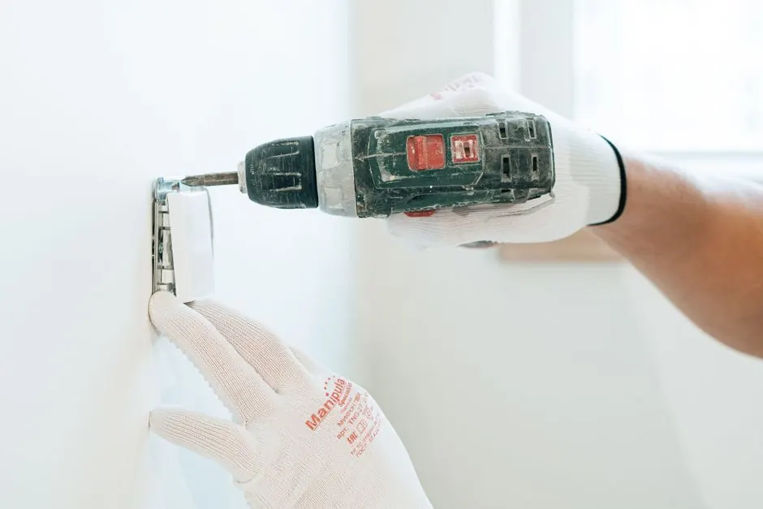

Enhance your dryer's efficiency and safety today.
Expert dryer deep cleaning Vero Beach FL for your home
Dryer deep cleaning Vero Beach FL is a vital service that ensures your dryer operates efficiently and safely. Homeowners in Vero Beach can benefit from our affordable dryer deep cleaning services to prevent potential hazards and improve appliance longevity.
Live dispatcherUpfront optionsBacked workmanship
What's included
What's included in dryer deep cleaning
Our dryer deep cleaning service covers all essential components to ensure your appliance runs safely and efficiently. Additional services may be available upon request.
Comprehensive vent cleaning
We clean the entire dryer vent duct, removing lint and debris that can cause blockages and reduce efficiency.
Lint trap cleaning
Thoroughly cleaning the lint trap is essential for safe dryer operation and is included in our service.
Internal component inspection
We inspect internal components like the heating element and thermostat for any signs of wear or damage.
Final performance testing
After cleaning, we perform a test run to ensure everything is functioning correctly and efficiently.
Service overview
What is dryer deep cleaning Vero Beach FL?
Dryer deep cleaning Vero Beach FL is a specialized service that involves thorough cleaning of your dryer's internal components, including the dryer vent duct, lint trap, and heating element. This process ensures that your appliance operates at peak efficiency and reduces fire hazards caused by lint buildup.
Local Vero Beach customers need dryer deep cleaning to maintain their appliances, especially in humid conditions that can exacerbate lint accumulation. Regular cleaning can prevent issues like dryer not heating and drum not turning, ensuring your laundry routine remains uninterrupted. Consider our Vero Beach dryer deep cleaning services for optimal dryer performance.

How we workWe verify the cause, compare realistic options, and confirm the repair before we leave.
The service timeline
What to expect during dryer deep cleaning
The process flexes to the condition, but these checkpoints keep decisions clear.
Initial assessment
We start with a comprehensive assessment of your dryer, identifying any issues such as a dryer not heating or strange noises. This step typically takes about 15 minutes.
Vent inspection
Next, we inspect the dryer vent duct for blockages and damage. A clear vent is crucial for optimal dryer performance and safety, and this inspection usually lasts 20-30 minutes.
Deep cleaning
Using specialized tools like a vacuum cleaner and drill, we thoroughly clean the lint trap, vent duct, and internal components. This process typically takes about an hour, depending on the dryer's condition.
Component check
During the cleaning, we check essential components such as the heating element and fuse for any signs of wear or damage. This step ensures your dryer operates safely and efficiently.
Final testing
After cleaning, we conduct a final test run to ensure everything is functioning correctly. You'll receive a report on the service performed and any recommendations for future maintenance.
Tools & methods
Tools and methods for dryer deep cleaning
Purpose-built equipment, used by trained technicians, so the job is done accurately the first time.
Vacuum cleaner
Used to remove lint and debris from the vent duct and lint trap.
Drill
Helps access and clean hard-to-reach areas within the dryer.
Multimeter
Used to test electrical components for proper functionality.
Use cases
When to consider dryer deep cleaning
These examples show how the service framework adapts rather than forcing every call through one repair.

Before: Unpleasant odors during operation
The homeowner noticed a burning smell whenever the dryer was used. → Post-cleaning, the dryer runs without any odors, ensuring a safe environment.
Before: Frequent mid-cycle stops
The dryer would randomly stop during cycles, creating frustration. → After the cleaning, the dryer runs smoothly without interruptions.
Problems we solve
Common problems solved by dryer deep cleaning
Our dryer deep cleaning service addresses several common issues that can affect appliance performance and safety.
Lint buildup causing overheating
Our cleaning service removes all lint buildup, ensuring safe operation and improved airflow.
Dryer not heating properly
We inspect and clean heating elements to restore proper function and efficiency.
Unusual noises during operation
Our technicians identify and address the source of noise during the cleaning process.
Pricing process
Pricing for dryer deep cleaning services
$180 - $450 depending on scope
Extent of cleaning needed
More extensive cleaning or repairs will increase the overall cost.
Accessibility of the dryer
Difficult-to-access dryers may require additional time and effort, impacting pricing.
Condition of components
If internal components need replacement or repair, this will also affect the total cost.
Customer reviews
What our customers say about our dryer deep cleaning
★★★★★
“I had my dryer deep cleaned, and it has never worked better! The team was professional and efficient. I highly recommend their services!”
★★★★★
“The dryer deep cleaning service was thorough. They found issues I wasn't aware of, and now my dryer runs perfectly. Great job!”
★★★★★
“Fantastic service! My dryer was making strange noises, and after the deep cleaning, it runs like new. I appreciate the professionalism!”
How often should I get my dryer deep cleaned in Vero Beach?
You should get your dryer deep cleaned every 6 to 12 months, depending on usage. Regular maintenance helps prevent issues like dryer not heating and ensures safety.
What are the benefits of dryer deep cleaning in Vero Beach?
The benefits include improved efficiency, enhanced safety, longer appliance lifespan, and better air quality. Regular deep cleaning reduces fire risks and maintains optimal performance.
Where can I find dryer deep cleaning services near me in Vero Beach?
You can find reliable dryer deep cleaning services near you by searching online or contacting local providers. Our team is ready to assist with affordable dryer deep cleaning Vero Beach FL.
What is the average cost of dryer deep cleaning in Vero Beach?
The average cost ranges from $180 to $450, depending on the extent of cleaning needed. Factors include the dryer's condition and accessibility of the vent.
Related services
Related Services
dryer repair
Our dryer repair services ensure your appliance runs smoothly after a deep cleaning. We address issues like drum not turning or unusual noises.
dryer not heating
If your dryer is not heating, our experts can diagnose and fix the problem. This service often complements our dryer deep cleaning.
electric dryer repair
We specialize in electric dryer repair, ensuring your appliance is safe and efficient. This service is crucial following a deep cleaning.Ready when you are
Schedule your dryer deep cleaning Vero Beach FL today!
Don't wait until it's too late. Call us for a thorough dryer deep cleaning and keep your home safe and efficient.

Talk with the local team
Request dryer deep cleaning
Reach out to us for all your dryer repair needs in Vero Beach. We are available from 8 AM to 6 PM and respond promptly to inquiries.